Estado da planilha nesta semana (13. CHECKS!C3).

TAF Equipamentos · Centro de gestão
Gestão das obras
Role para ver a semana
Três obras, um corte por semana. Todo número aqui sai da planilha de gestão da TAF. Onde falta dado, aparece SEM BASE.
Passe o mouse terreno → projeto
Três obras.R$ — em carteira.— vencidas.O caixa aperta em —.
Semana
—
—
—
Restrições com prazo passado, somando as três obras.
O que precisa andar até sexta para não virar atraso.
Tudo que ainda não foi resolvido, em todas as obras.
02 / ObrasProdução · Dinheiro · Plano
Produção dinheiro plano — Produção dinheiro plano —
Sem dado, sem luz — Sem dado, sem luz —
Como ler as luzes
Cada obra acende três luzes. Sem apontamento de campo, a luz fica SEM BASE. Não estimamos o que não foi medido.
03 / Quem está com a bolaPasse o mouse em um nome
—
Restrições abertas—
00—
04 / Caixa da empresa10. CAIXA · saldo previsto mês a mês
O caixaaperta.
—
—
05 / Decisões da semana—
O método
Todo número vem da planilha de gestão. Falta dado é SEM BASE.
Nada aqui é digitado à mão. Se a planilha não tem a informação, o painel mostra o buraco em vez de preencher.
O resto está lá dentroCorte —
Abrir o painel.
Painel completo, oito abas ↗
342343281